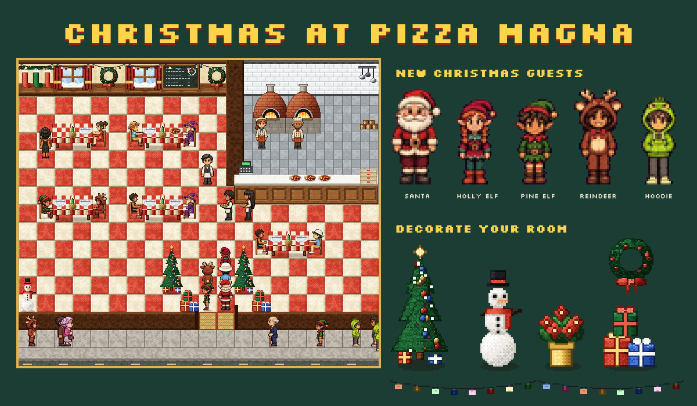

The holidays have reached Porto Magno! This update brings Christmas decorations for your dining room and a few very special guests, plus new music and news from the 3DS version.

Open Shop › Decorate the room and you'll find a Christmas corner:
They aren't just pretty: they make the room cosier, and families love them most.
From 1 November to 31 January, some unusual customers come in:
After January they go back to the North Pole until next winter.
Twelve new lo-fi tunes join the Italian chiptunes, from a rainy-day piano to a sunny chillhop and a slow Sunday-morning ballad. The music now alternates between lo-fi and Italian, in a new random order every time.
The homebrew 3DS version got a big update: the dining room now plays on the top screen with all the characters, customers leave with their faces, the day has a Pause button, and the music plays there too.
Your save carries over as always. Merry Christmas, and happy pizza making!